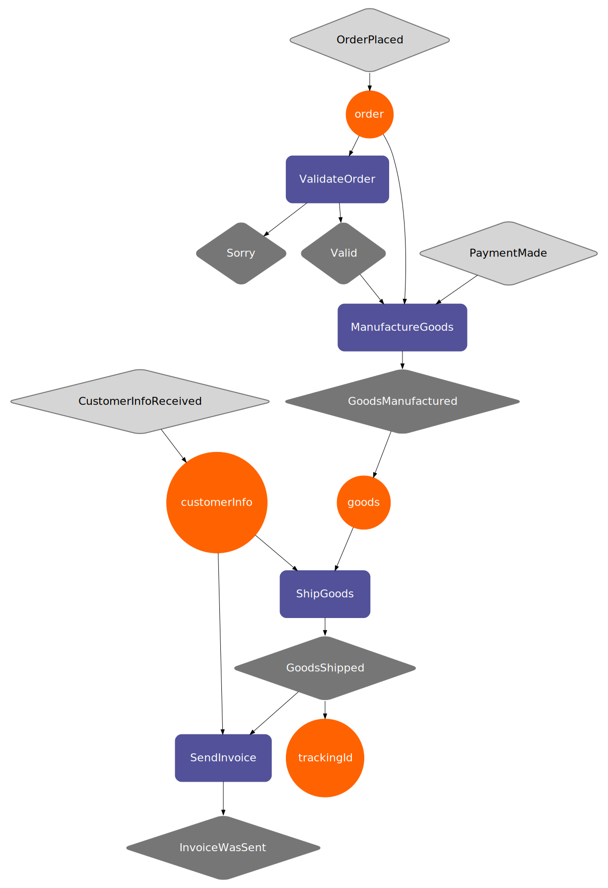

Introduction
Baker is a library that reduces the effort to orchestrate (micro)service-based process flows.
Developers declare the orchestration logic in a Recipe (process blueprint).
A Recipe is made out of:
Interactions(functions)Ingredients(containers for data)Events
The Baker runtime on the other hand runs instances of the Recipe across a cluster of nodes in an asynchronous fashion.
Baker allows you to
- Declaratively design your business processes using a recipe Domain Specific Language (DSL).
- Visualize your recipe allowing product owners, architects and developers to talk the same language.
- Manage your recipes using the Baker runtime.
- Create process instances of your recipes.
- Fire sensory events.
- Inquire the state of your recipe instances.
Why Baker
Upgrading your business to an agile, adaptive and scalable microservice-based architecture does bring significant advantages, but also critical challenges that must be resolved:
- the coupling of business logic to service technologies
- and the inherent complexities of distributed systems
Baker solves these challenges by providing an expressive language to encode your business logic (recipe), and a distributed runtime to scale recipe instances with little configuration and no extra development.
Decouple your business logic from your microservices: When developing microservices it is easy to fall into bad practices where developers encode essential business logic into code which might get polluted with implementation details, and even worse, distributed over many independent projects/repositories. Baker, in contrast, requires the developer to express the business logic as a Recipe by using the provided language DSL, and separately code implementations of the data (events) and the process steps (interactions), enforcing decoupling of business from technology.
Ease the friction of distributed systems: When developing microservices you are confronted with all the inherent challenges of distributed systems, topics like communication models, consistency decisions, handling failure, scaling models, etc. Baker eases the development by providing out-of-the-box solutions from its clusterized runtime. Baker nodes are able to create and distribute recipe instances between them, handle failed interactions with several strategies, restore the state of long-lived process and more, allowing the developer to focus on what it matters for the business.
Reason about your business process without the burdens of technology: Baker can visualize your recipes, enabling developers and business stakeholders to better communicate and reason about the business processes.
Example of a simple web shop recipe:

How to read these docs
There are two big sections:
-
The Development Life Cycle: works like a big tutorial of Baker, it is a "learning by making" type of documentation, it is for those who like a top-down approach to learning.
-
The Reference: has descriptions of every part of Baker, it is a "dictionary/reference" type of documentation, it is for those who like a bottom-up approach to learning, and also works as a reference for quickly reviewing concepts in the future.